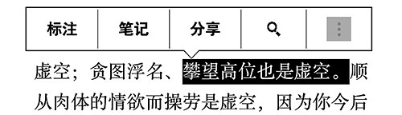
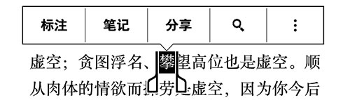

编辑：书伴
Kindle 最有用的功能之一就是字典查询，阅读时遇到陌生的字词，只需要点选一下就能即时调用字典查询含义。最近有小伙伴反应，使用 Calibre 把一本中文电子书转换成 AZW3 格式并拷贝到 Kindle 中，查询字典时想要选取某个字词，却只能选中一整句。这是怎么回事儿？下面咱们来研究分析一下。

发现问题最有效的方法就是把正常的和不正常的放在一起对比分析。所以，我准备了以下从不同渠道获得的 AZW3 格式电子书，然后把它们直接拷贝到 Kindle 中做比较。
通过对比发现：使用 Calibre 转换的 AZW3 格式电子书只能选中一整句，而不能选择字词。而从亚马逊 Kindle 商店购买的 AZW3 格式电子书能正常选择字词。使用 KindleGen 转换成 MOBI 格式再推送到云端得到的 AZW3 格式电子书能正常选择字词。接着，我又将 KindleGen 生成的 MOBI 格式电子书直接拷贝到 Kindle，发现和 Calibre 转换的 AZW3 一样只能选中一整句，也不能选择字词。
从上面的测试可以看出，凡是经过亚马逊服务器处理过的 AZW3，Kindle 就可以选择字词，否则就只会选择一整句。这样就可以得出一个比较合理的结论了。
不论是使用亚马逊官方最新版本的 KindleGen 转换的 MOBI 格式，还是用 Calibre 转换的 AZW3 格式，其实都属于亚马逊 KF8 标准的电子书，我们从 Kindle 商店购买的电子书也都属于此标准。通过 KindleGen 生成的 MOBI 格式跟 AZW3 格式在版式上没有什么差别，将其推送到云端也会被亚马逊服务器转换成 AZW3 格式。本地转换的 AZW3 无法正确取词，被亚马逊服务器转换后却能正确取词了，猜测这可能是亚马逊服务器端对 AZW3 格式进行了如分词之类的特殊处理。但奇怪的是，通过比较用 KindleUnpack 分解两种 AZW3 格式电子书得到的文件，并没有找到什么不同的地方。
另外，如果仔细观察你会发现，不论是从 Kindle 商店购买还是通过亚马逊服务器转换后的 AZW3 格式中文电子书，即便是某些字组合在一起并不是一个词，但查询字典时仍只能两、三个词同时选中，而大多不能自由点选单个字。这很可能是因为分词技术还不成熟，毕竟中文不像英文单词那样，由于词与词之间有空格，很好区分，和搜索引擎的中文分词技术一个道理。当然，这也只是从表象产生的猜测，纯属个人之见，毕竟 AZW3 是亚马逊私有格式，并不开源，具体是什么原因外人无从得知。

解决方法很简单，但都不完美，请自行取舍。对于一本电子书，如果你很在意自由点选字词，不怎么在意版式，可以放弃使用 KF8 标准，在 Calibre 中使用 old 模式把电子书转换 MOBI 格式，而不要使用 new 或 both 模式，也不要转换成 AZW3 格式。如果非常在意排版的话，建议使用最新版的 KindleGen 将电子书转换成 MOBI 格式后，再推送到亚马逊云端，只是这种方法在 Kindle 中会不显示封面。